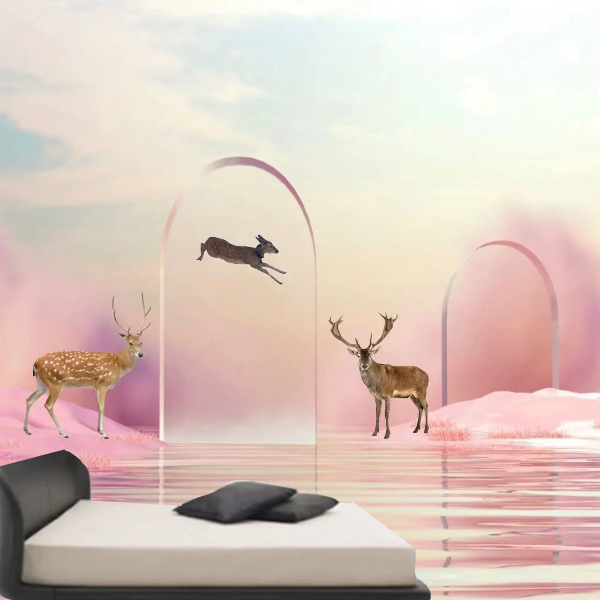

Sika deer world, 2088
Sika deer world 2088
The sika deer (Cervus nippon), also known as the spotted deer or the Japanese deer. The Sika deer were endangered by deforestation decades ago. This scene recreates sika deers, Users can lie in bed at home and observe sika deer closely.